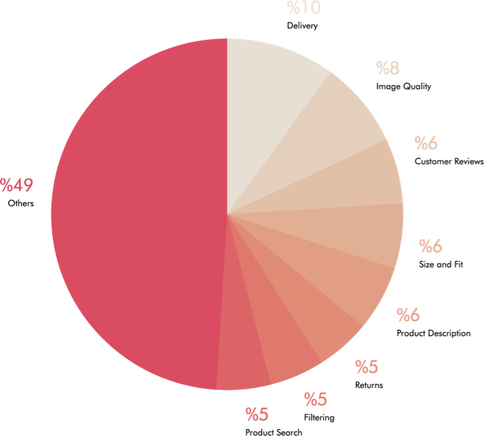
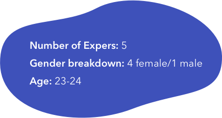
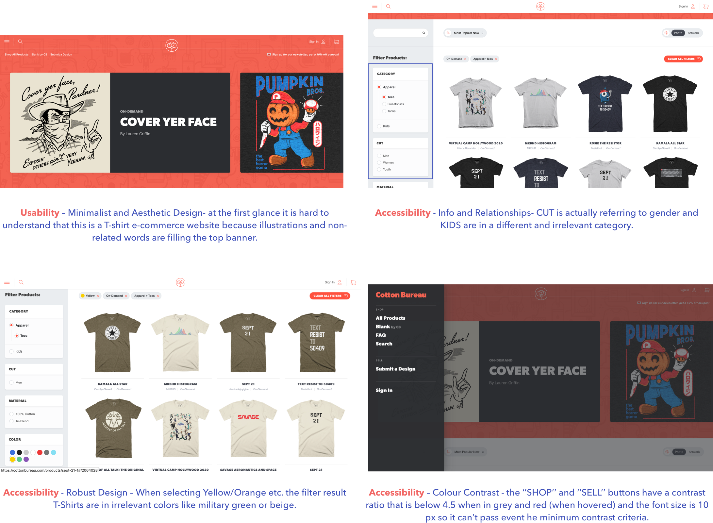
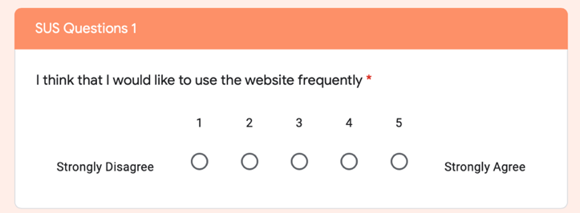
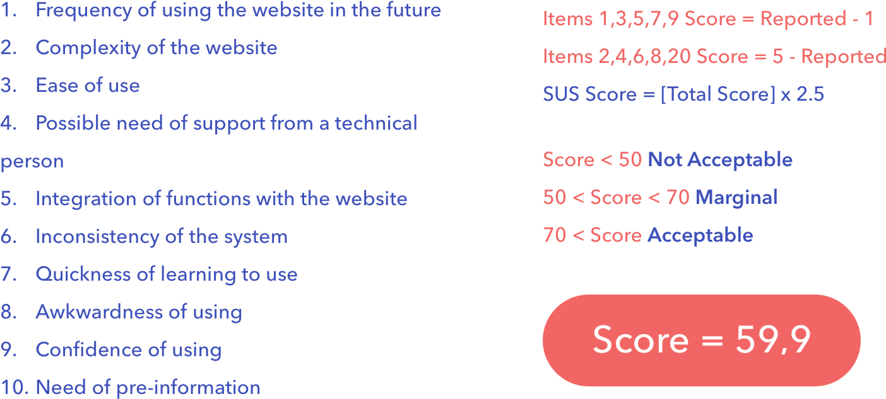
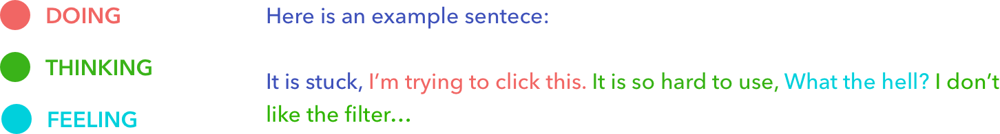
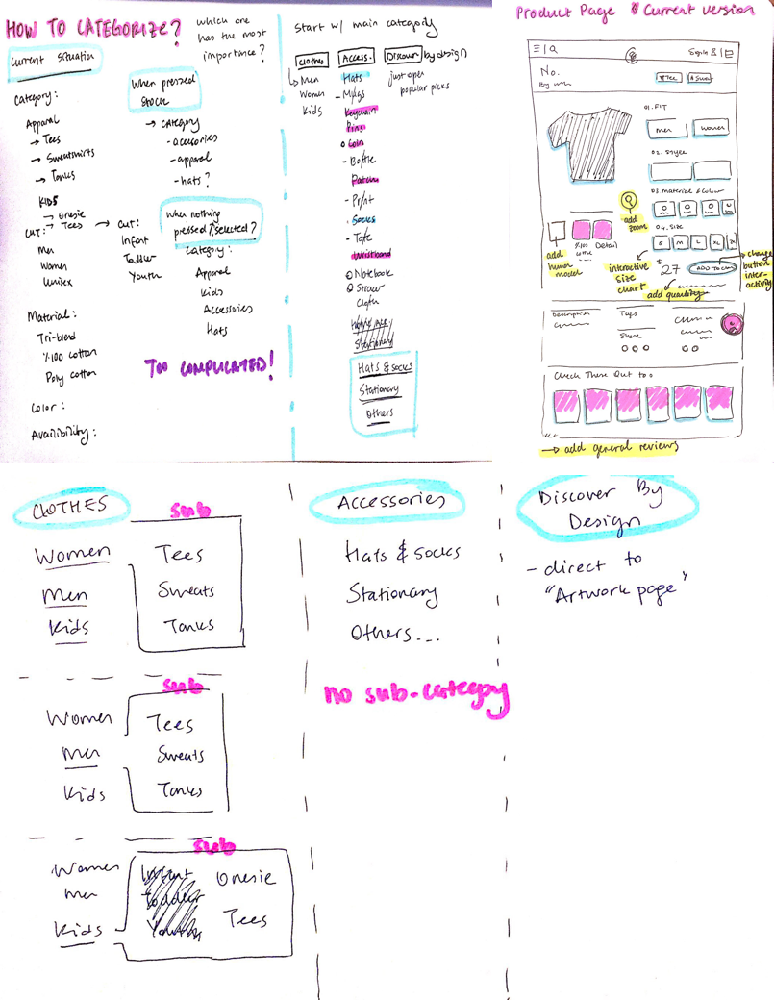
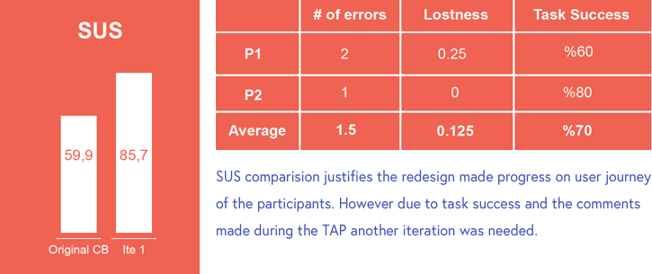
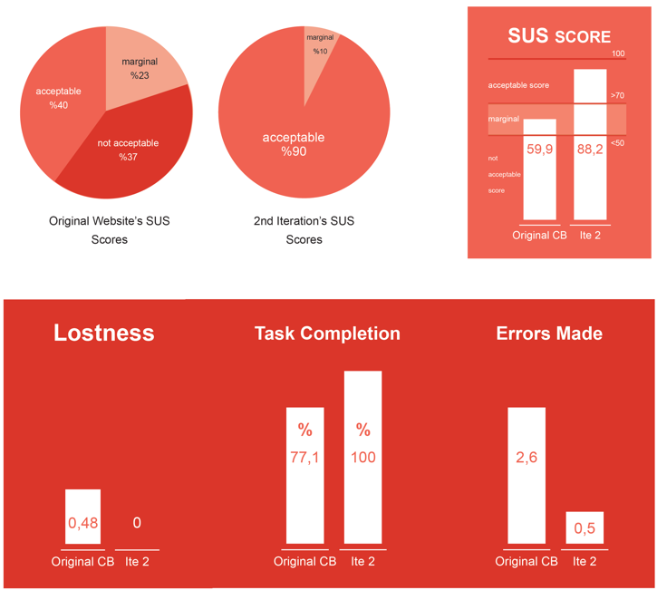

Cotton Bureau is an online community where designers put up their graphical talents and combine with quality soft tees, hoodies etc. It is a website where you can either upload a visual and start your process of being a commissioned designer or you can just buy any graphical t-shirt, in various sizes, colours and cloth types.
Cotton Bureau website already exists but needs a new design due to some usability and accessibility issues. A responsive design along with clearly defined branding that isn’t changed much from its original. The new experience is presented in a prototype that effectively shows the main changes made accordingly to the in-depth user research.
ROLEUI/UX Designer
Research and Defining phases carried out in a group of UX students.
Ideation, Designing, Prototyping and Iterative processes were individually executed.
‘The top 5 most important tasks when you buy clothes online’ question is asked to 74 people and according to their answers, we decided on what online apparel shoppers care the most in a website and which features they would like to see.

Like in the image above, the most important tasks determined, and we will refer them as Top Tasks, which are Delivery, Image Quality and Customer Reviews. Also, the other 5 answers which still have big impact (Size and Fit information, Product Descriptions, Returns, Filtering, Product Search) will be taken into consideration when analyzing Cotton Bureau’s website.
EXPERT REVIEW ASSESSMENT
Being aware of the positive and negative features of the website that we are analyzing is crucial and that’s why expert review assessment is conducted on Cotton Bureau’s website. After the review and finding out the usability and accessibility problems whether they are important or relatively have less impact on the users’ journey, we compared them with the general guidelines – Nielsen Heuristics and WCAG 2.0.

• Results and Discussion
The evaluation of Home Page and its MoSCoW table is shown below. Like other 3 of Cotton Bureau’s Pages (Search Page (California), Product Page (California) and Checkout Page) are evaluated with MoSCoW tables too.

SATISFACTION ASSESSMENT
Measuring users’ satisfaction goes through collecting qualitative and quantitative data while focusing on the emotional experience. Collecting these will give us the answer to how does a user feel using Cotton Bureau’s website rather than what they aim to do or how they achieve it.
• SUS
Scenario: ‘’Imagine that you are looking for an outfit to wear to a friend’s party in two-week time. Find an outfit, see if it fits, and check the delivery time.’’Then asked 27 participants 10 SUS Questions.


• THINK ALOUD PROTOCOL
Two participants given a scenario for The Think Aloud Protocol (Jaspers et al., 1997): ‘’Search for an outfit for a meeting with the Queen’’ then asked them to use this scenario for navigating in the website while we record their voice to analyze later.

PERFORMANCE ASSESSMENT
Measuring the performance of the website is related to gathering quantitative data which includes the statistics of overall task completion, the time spent on the task, all errors and efficiency. The statistics and analysis will give us how Cotton Bureau’s website is performing compared to other fashion e-commerce websites.
30 students of UX MA of Loughborough University Given a scenario for the performance tasks; ‘’imagine you’re buying clothes for winter’’ and lasted around 1 hour.
2
DEFINE
Goal: To define the main problems of Cotton Bureau website and priotize what to redesign next
Process: MoSCoW Analysis
MoSCoW ANALYSIS
3
IDEATE
Goal: To brainstorm on how to make changes to enhance the user experience of Cotton Bureau website
Process: Sketches
SKETCHES
Before moving on to the Hi-Fi design, some sketches were made to spark some ideas and see what can be changed. Many trials and categorization methods were tried to find the optimum top banner for Cotton Bureau and for the product page the changes were highlighted and added.

4
REDESIGN
Goal: Create the first redesign according to the researches have been made
Process: 1st Redesign
1st REDESIGN
In the overall design, the basic design elements (like colors, fonts, general layout etc.) kept the same since they weren’t causing any confusions and problems in the user journey. The changes were more like the structure of the website and adding little but crucial details.
5
PROTOTYPE
Goal: Test possible customers with the new redesign and learn about what further changes can be made
Process: User Testing, A/B Testing
1st USER TEST
1st user test was carried out with 10 participants, 2 of the evaluations consisted of Think Aloud Protocol, SUS while the rest of the participants only did SUS testing to gain statistical data. All of the participants are students in various cities (Loughborough, Ankara, Dublin) between the age of 20-25. The TAP evaluation carried out in non-laboratory environments (in cafe and living room) for more natural insights.

2nd USER TEST (A/B TEST)
After the comments and the insights from TAP, the usability issues were identified for the Iteration 1. These issues are taken into consideration and the mentioned sections are redesigned for a better alternative which will be visible in the FINAL DESIGN section.
After iterating the website design twice, and A/B test is conducted in order to compare if the new design enhanced by the performance and satisfaction metrics. as well as its usability.

In the original website the overall SUS score was 59,9 which below the acceptable score. After two iterations, the redesigned websites’ final score is 88,25. It can be said that the new design have a higher satisfaction rate while increasing the individual responses which states that the usability of the website is distinctively high.
In lostness below 0.4 is targeted for a smooth user journey, at the end of 2 iterations this number decreased to 0. However the number of participants is different as well as the interactivity of the website. The possible wrong clicks is considered in the calculation of lostness but the awareness of participants to this less interactivity may have created a more direct user journey.
FINAL DESIGN
After 2 redesign attemps the final design emerged. Making relatively small changes enhanced the user flow however deciding which changes to make and justifying it with research and statistical methods showed me to follow the design process neatly.
.png)